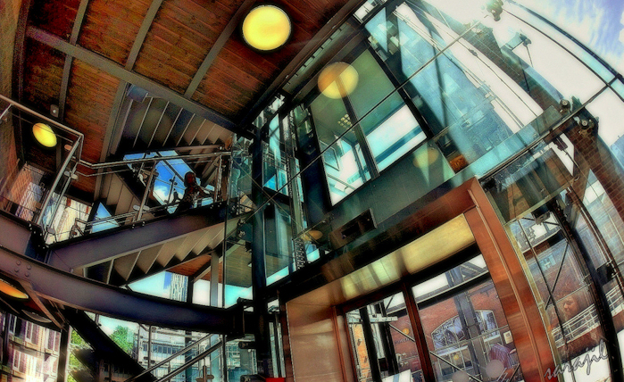
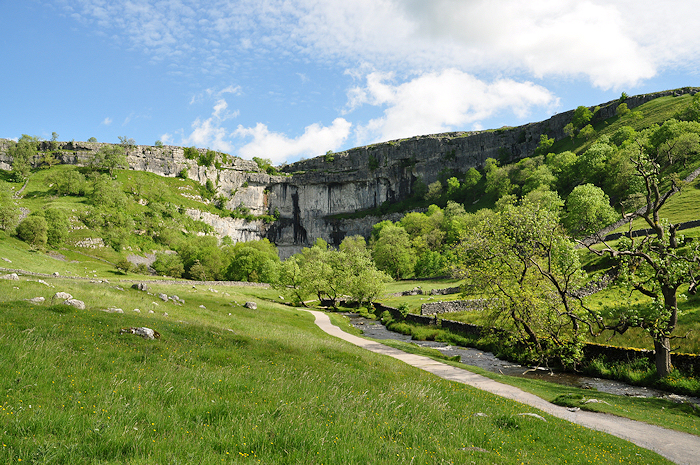

Registration is now open: book here (see details below on workshops, extras, and accommodation bookable through this site).
We're delighted to open booking for GeoComp 2017 – the standard package includes the conference plus a welcome dinner on Monday 4th September and the conference dinner on Wednesday 6th September (vegetarian and other options available – see form when booking). The Early Bird cost is £300 (£200 for students); after 2nd July, the full cost is £350 (£250 for students). On the booking site you can also book for the following:
Pre-conference workshop on machine learning of environmental/geospatial data
Pre-conference workshop on building high altitude drones for field sampling and surveying.
The conference ends at mid-day on the 7th, after which we've organised a fieldtrip to the heart of the industrial revolution: Manchester! GeoCompers at Manchester University have kindly offered to host us for a half day at the Museum of Science and Industry where they have various items from the early history of computing, including a working Jacquard Loom and a working renovation/replica of the Manchester Small-Scale Experimental Machine aka "Baby", the world's first stored-program computer.
We have reserved spaces at the University accommodation for the conference. For more details on cost, location, etc., see our accommodation page.
To book the accommodation, see "More Info" on the booking site. This is in our "Storm Jameson" block, is reasonably priced (see booking site for conference discount code) but also pretty plush for student accommodation, and is five minutes walk from the conference. We strongly recommend booking here, but if you want recommendations for other nearby hotels, see our accommodation page. Please note that we can only hold our rooms at Storm Jameson until the 19th June, after which availability may be limited.
Leeds has a wide variety of entertainments and sightseeing opportunities within the city, but is also central in the UK, with good connections to a wide range of day trips and areas for longer breaks. For some ideas, see our things to do page.
All conference spaces have wheelchair access, but please do get in contact if there's any additional help we can provide. For those with hearing or sight requirements, please do get in contact and we will arrange appropriate aid and technology. For dietary requirements please let us know during the booking process (this is the final question during booking).